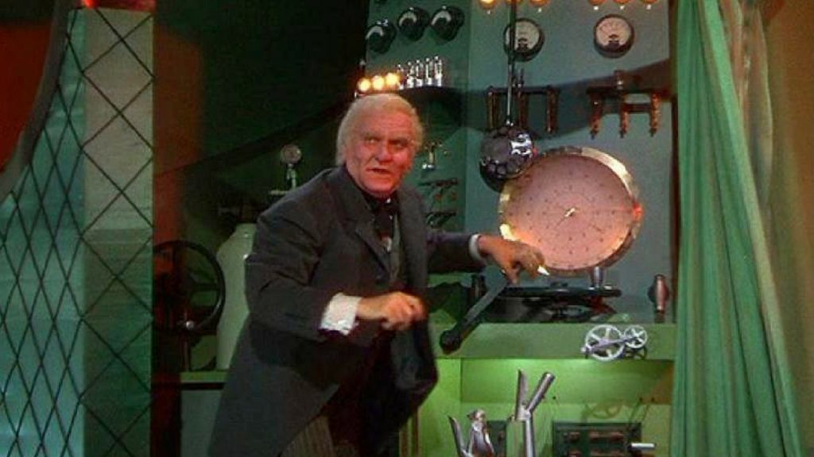
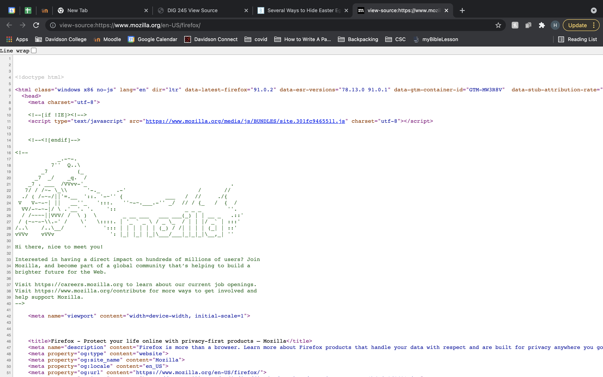

DIG 245 View Source
Henry Howell
How To Find Dev Tools
- First, head to your favorite webpage, mine is apod.nasa.gov which shows a different astronomy picture of the day.
- Next, right click anywhere on the webpage, it's easier if you click where there isn't any content
- Finally there are two options at the bottom of the drop down menu that shows up, "Inspect" and "View Page Source"
- Clicking on "View Page Source" brings up the entire page source for the website in one big file that can hard to read.
- Clicking "Inspect" though, gives you much more options to break down the website in an easy and organized manner.
In Inspect you are able to highlight parts of the website in order to see where they correspond in the code. Additionally,
you can experiment with changing things in the code and see the changes appear locally on the website.
How To Use Dev Tools
- You can use the dev tools as a way to manipulate and change your website directly and see results immediately.
- Dev tools can also be used for seeing the heirarchy of your code, seeing what is being used and what is being ignored.
- Additionally, it allows other developers to go in and look at the code of others in order to see what they did as a way to implement those ideas in their own websites.
The Secrets of Dev Tools
Finding the dev tools is like removing the curtain and revealing the wizard, like in Wizard of Oz.
We are able to see the "magic" behind what we are seeing on the website itself by seeing the code and pinpointing what does what.

Hidden Messages
Sometimes web devs hide secret messages for those of us who know to look for them. One
such example is on mozzila's website where if you view their page source you will find the image below.

DUGONGS > MANATEES
The dugong is a sibling to the manatee but unlike the rounded tail of the manatee
the dugong has a dolphin tail which I think is the greatest thing in the whole wide world.
Thanks for coming!